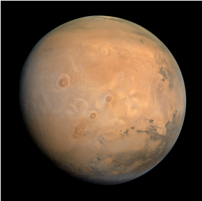
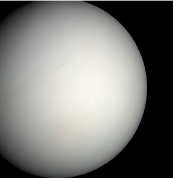

| Mars |  | Mars is the 4th planet from the Sun | Named after the Roman God of War | Mars' gravity is around 38% of Earth's | One martian year is 687 martian days of 24.7 hours | Mars' mean temperature is -65 degrees C | Mar's has a density of 3,934 kg/m^3 | Mars travels at 24.1 km/s |
|---|---|---|---|---|---|---|---|---|
| Mercury | |
Mercury is the 1st planet from the Sun | Named after the Roman God of Messengers | Mercury's gravitional pull is 62% less than Earth's | One mercurian year is 88 mercurian days of 4222.6 hours | Mercury's mean temperature is 167 degrees C | Mercury has a density of 5,429 kg/m^3 | Mercury travels at 47.4 km/s |
| Jupiter | |
Jupiter is the 5th planet from the Sun | Named after the Roman God of the Sky | Jupiter's gravity is around 136% stonger than Earth's | One jupiterian year is 4,331 jupiterian days of 9.9 hours | Jupiter's mean temperature is -110 degrees C | Jupiter has a density of 1,326 kg/m^3 | Jupiter travels at 13.1 km/s |
| Venus |  | Venus is the 2nd planet from the Sun | Named after is the Roman God of Love | Venus' pull is 91% of Earth's | One venusian year is 224.7 venusian days of 2802 hours | Venus's mean temperature is 464 degrees C | Venus's has a density of 5,243 kg/m^3 | Venus travels at 35 km/s |